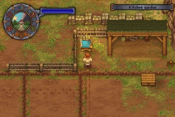
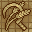
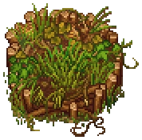
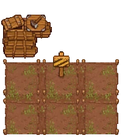
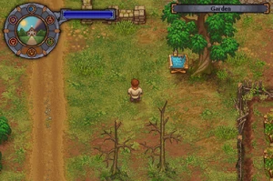
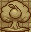
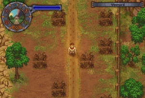
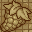
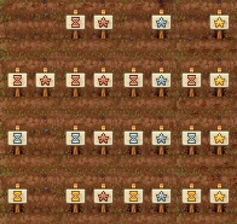

Farming
Farming is the process of growing fruit, vegetables, and other produce.
Kitchen Garden



The northern part of the kitchen garden.
The kitchen garden is located directly southeast of the workyard and requires permission before usage.
Unlocking
• First, read the sign in the north at the blueprint table, telling you to apply to Horadric for it.
• Second, speak to Horadric at the tavern and ask about the garden. This will unlock the farming technologies. He'll give you a
Garden certificate which can be used at the blueprint table in the kitchen garden.
• Third, use the garden certificate to claim the property. Until you learn more about farming, you can only build an empty garden bed.
• Fourth, talk to the merchant at  about the garden and make a deal with him. You'll be able to work the garden without this, but you won't be able to advance his questline.
about the garden and make a deal with him. You'll be able to work the garden without this, but you won't be able to advance his questline.
You may swap the third and fourth step.
Blueprints
 Kitchen garden | |||
|---|---|---|---|
| Workstation | Materials Required | Technology | Use |
| Trunk |
4× Flitch 4× Nails 2× Simple iron parts |
Improvement | General storage, x5 |
| Empty garden bed |
N/A | Garden beds | Growing: carrots, cabbage, wheat, beets, hemp, pumpkins, and onions. |
| Garden bed with sticks |
5× Wooden stick |
Improvement | Growing: lentils |
| Compost heap |
10× Wooden stick |
Decay | Processing crop waste into: peat, maggots |
| Zombie farm |
5× Wooden plank 3× Simple iron parts 10× Nails |
Zombie gardening | 3x3 beds (9x9 units) farming plot operated by an autonomous zombie |
Basic Crops
Basic crops lack quality levels. This appears as a star  ,
,  , or
, or  in the upper right corner. Crops and seeds cannot be improved, so they don't benefit from quality bonus of a corresponding fertilizers. That being said, they do benefit from quantity bonus of quality fertilizers. A good tactic is to grow them on at least Peat fertilizer, that way you reduce seed loss and, in turn, reduce the need to buy new seeds. However, due to random nature of farming, this isn't guaranteed. In order to become fully self-sufficient, some of the seeds must be grown with silver quality fertilizer. The farmer only sells basic crops at Tier I.
in the upper right corner. Crops and seeds cannot be improved, so they don't benefit from quality bonus of a corresponding fertilizers. That being said, they do benefit from quantity bonus of quality fertilizers. A good tactic is to grow them on at least Peat fertilizer, that way you reduce seed loss and, in turn, reduce the need to buy new seeds. However, due to random nature of farming, this isn't guaranteed. In order to become fully self-sufficient, some of the seeds must be grown with silver quality fertilizer. The farmer only sells basic crops at Tier I.
Improvable Crops
These crops each have a quality level, which has the potential of being improved with fertilizer. Only improvable crops can be packed into crates at the crate factory to be sold through the trade office.
| Crop | Seed | Source | Grown in |
|---|---|---|---|
| Lentils |
Lentil seed |
Farmer | Garden bed with sticks |
| Pumpkin |
Pumpkin seed |
Farmer | Empty garden bed |
| Onion |
Onion seed |
Farmer | Empty garden bed |
Compost



A compost heap.
The compost heap turns eight units of crop waste into six units of peat and two units of maggots. Peat serves as a 'starter' fertilizer with a copper quality and copper boost, as well as being a necessary ingredient for crafting more advanced fertilizers.
Peat is also necessary for certain craftable landscapes, such as berry bushes and apple trees in the orchard, and flower beds in the graveyard. Maggots are not related to farming otherwise, and can instead be utilized through fishing and alchemy.
Zombie Farm



The zombie farm in different stages.
If you don't want to work your farm on your own, get some  zombies and have them do all the hard work for you in a zombie farm. Once built, these farms can be advanced to higher tiers to allow for better crops.
zombies and have them do all the hard work for you in a zombie farm. Once built, these farms can be advanced to higher tiers to allow for better crops.
There can be up to six zombie farm plots in the kitchen garden, but placement of the remaining user-farmed plots can create a 'trap' from which the player cannot get out:
Never place 'stick plots' in front of the zombie farm entrance, as they prevent the player from moving through the plot. They create an unbreakable trap, since the player cannot get to the blueprint stand to remove either the plots or the farm!
Orchard



The orchard in its original state.
This is southwest of the workyard where trees and shrubs can be planted. It is separate from the kitchen garden and has its own workbench. The seedlings can be obtained from the witch. Before using it, you have to get rid of the dead trees blocking a lot of room there. You need to unlock the "Woodcutter" technology for this.
Blueprints
 Orchard | |||
|---|---|---|---|
| Workstation | Materials Required | Technology | Use |
| Place for the berry bush |
1× Bush berry seedling 3× Peat 1× Wooden stick |
Transplanting | After maturing, the bush can be harvested regularly; 4× Berry @ - Will net + than the common wild berry bush. |
| Place for the apple tree |
1× Tree apple seedling 3× Peat 2× Wooden stick |
Transplanting | After maturing, the tree can be harvested regularly; 12× Apple @ - Will net + than the rare wild apple tree. |
Vineyard



The vineyard in its original state.
The vineyard is west of Witch Hill. It is where you grow grapes and hops. It is inaccessible until you gain access to the Witch Hill.
This can be done by speaking with the inquisitor for the first time on  , which causes the guard to let you pass in the future. You can alternatively remove the large fallen tree blocking the path to the north east of your home to create a shortcut.
, which causes the guard to let you pass in the future. You can alternatively remove the large fallen tree blocking the path to the north east of your home to create a shortcut.
The vineyard already has vine trellises that can be used without the inquisitor's permission, once they've been cleared of weeds. If you want more trellises or a trunk, you have first to complete a quest for the inquisitor, after which the workbench in the vineyard will appear.
Blueprints
 Vineyard | |||
|---|---|---|---|
| Workstation | Materials Required | Technology | Use |
| Trunk |
4× Flitch 4× Nails 6× Simple iron parts |
Inquisitor | General storage, x3. |
| Vine trellis |
5× Wooden stick |
Grape Farming | Growing: grapes, hops |
| Zombie vineyard |
5× Wooden plank 3× Simple iron parts 10× Nails |
Zombie vineyard | Growing: Grapes, hops |
| Porter station |
8× Flitch 4× Nails 2× Clean paper |
Zombie logistics | Transporting goods |
Vineyard Crops
| Crop | Seed | Source | Grown in |
|---|---|---|---|
| Grapes |
Grape seed |
Merchant | Vine trellis |
| Hops |
Hops seed |
Miller | Vine trellis |
Fertilizer



All possible types of fertilized garden beds. Harvest time decreasing top to bottom, quality increasing left to right.
Fertilizer can be used to increase the growth rate, quality, and yield of crops. Peat is the most basic fertilizer, while more specialized and effective fertilizers can be produced through alchemy. The greater the fertilizer's effect, the more time, material, and  it will require to manufacture. You must use the fertilizer before planting a seed. To use the fertilizer select it instead of the seed, a sign will appear that reminds you that this field is fertilized. Afterwards plant the seed.
it will require to manufacture. You must use the fertilizer before planting a seed. To use the fertilizer select it instead of the seed, a sign will appear that reminds you that this field is fertilized. Afterwards plant the seed.
Multiple types of fertilizers can be used on one farm plot, combining bonuses, however effects do not stack. For example, using
Peat and
Quality fertilizer I will apply the effects: +2 seeds, +2 produce, and a reduction in growth time (don't do it the other way around though, it will waste the fertilizer). Different signs are displayed in the farm plot depending on which effects are active.
Note that there is an alternate way to obtain Boost fertilizer I, Boost fertilizer II, Quality fertilizer I and Quality fertilizer II if the player has the Better Save Soul DLC. After opening up the Souls room by continuing the Euric questline, players will be able to create an Organ Workbench, which allow them to craft both fertilizers using Peat, Hemp, Sin Shard and Ash.
| |||||||||||||||||